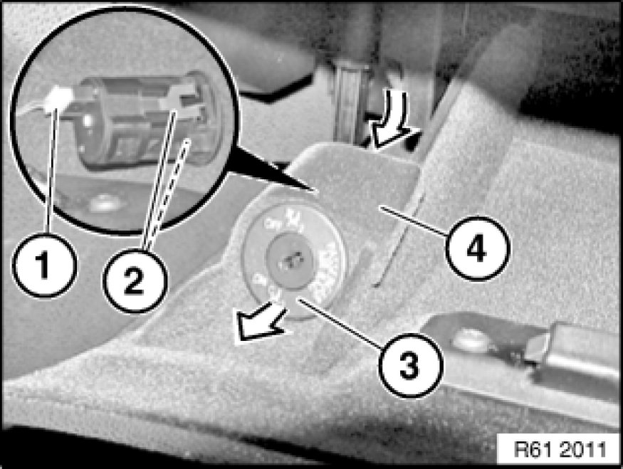

Removing and Installing/Replacing Switch for Passenger Airbag Deactivation
61 31 038 - Removing and installing (replacing) switch for passenger airbag deactivation

Warning!
Read and comply with safety regulations [1][2]Safety Regulations for Handling Components with Gas Generators for handling airbag modules and pyrotechnical belt pretensioners.
Incorrect handling can activate airbag and cause injury.

Necessary preliminary tasks:
- Disconnect battery negative lead Disconnecting and Connecting Battery Negative Lead
- Open glovebox lid

Unlock catches (2) from rear and feed switch for passenger airbag deactivation (3) in direction of arrow out of switch receptacle for passenger airbag deactivation (4).
Disconnect plug connection (1) and remove switch for passenger airbag deactivation (3).
Installation Note:
Make sure switch for passenger airbag deactivation (3) is correctly seated in switch receptacle for passenger airbag deactivation (4).

Replacement:
Remove lock cylinder for passenger airbag deactivation Removing and Installing/Replacing Lock Cylinder for Passenger Airbag Deactivation.